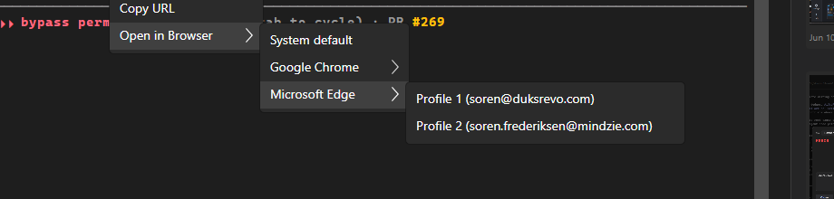

Fresh scripts\local-build-avalonia.ps1 -Slot 5 from the PR branch HEAD (footer build hash bcc6535 matches the commit), launched via the cc-director-launch task. A session was created, a URL parked in the terminal, and the context menu driven with synthetic input. Each result was judged from the screenshot and the Director log - not from the developer's proof.
| AC | Result | Evidence |
|---|---|---|
| 1 - Submenu lists installed browsers + their real profiles | PASS | Submenu shows System default / Google Chrome / Microsoft Edge; Edge -> 2 profiles by name+account; Chrome -> 7 profiles, account-bearing sorted first then Person 1 / Your Chrome. Matches the issue reference tables. |
| 2 - Choosing browser+profile opens that exact profile | FAIL | Clicking Edge -> "Profile 2 (mindzie)" does NOT launch that profile. The parent's tunnel handler fires instead (log: "OpenInBrowserDefault: no remembered default, using system default"). No --profile-directory launch occurs. |
| 3 - Sticky default | FAIL | Because the leaf click is hijacked, the choice is never saved - config.json browser.default is ABSENT after selecting "Profile 2" twice. A sticky default cannot be established through the UI. |
| 4 - Works for URLs and local HTML | FAIL | Same root cause - profile selection is impossible for any link type. |
| 5 - No silent fallback on missing target | N/A (path works, unreachable via UI) | The error path is correct in code, but it can only trigger once a default is set, which the UI cannot do (see AC2/AC3). |
The AC3 fix added a tunnel-phase PointerPressed handler to the parent "Open in Browser" MenuItem so a header press launches the remembered default. But a tunnel route travels top-down through ancestors, and the submenu leaf items are descendants of that parent MenuItem. So a press on ANY leaf (System default, a browser, a profile) tunnels through the parent first, where the handler sets e.Handled = true, closes the menu, and runs OpenInBrowserDefault - the leaf's own Click never fires.
Clicking the "System default" LEAF (which has its own distinct handler OpenInBrowserSystemDefault) instead logged the PARENT handler:
[TerminalControl] OpenInBrowserDefault: no remembered default, using system default: https://dev.azure.com/mindzie/QATest
Three leaf clicks (Edge/Profile 2 x2, System default x1) all produced OpenInBrowserDefault; config.json browser.default stayed absent. See fail-evidence.txt.
--profile-directory=Profile 1) and the choice is saved to config.json.config.json browser.default is never written.The parent's press handler must act only when the press is on the parent's OWN header, not on a descendant submenu item. Options: gate on the pointer being within the parent header's bounds; check e.Source is not inside the submenu items presenter/popup; or drop the tunnel handler and re-open the menu's default another way (e.g. a dedicated first item, or only handle when !parent.IsSubMenuOpen AND the source is the header). Whatever the mechanism, re-verify BOTH: (a) plain parent-click launches the remembered default, AND (b) clicking each leaf still runs that leaf's own action - that second case is the regression this fix introduced and the dev pass did not cover.
